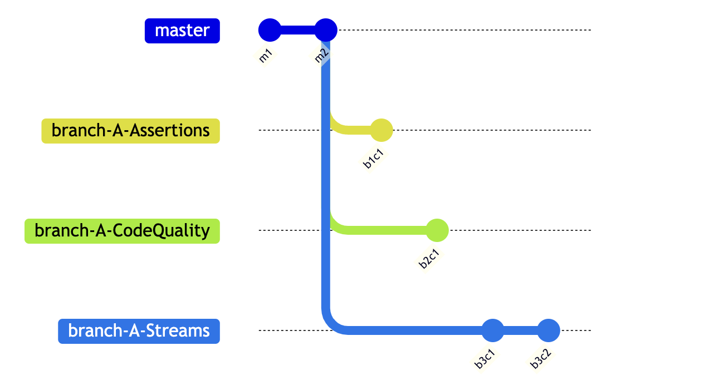
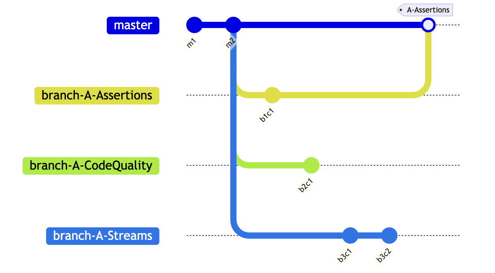
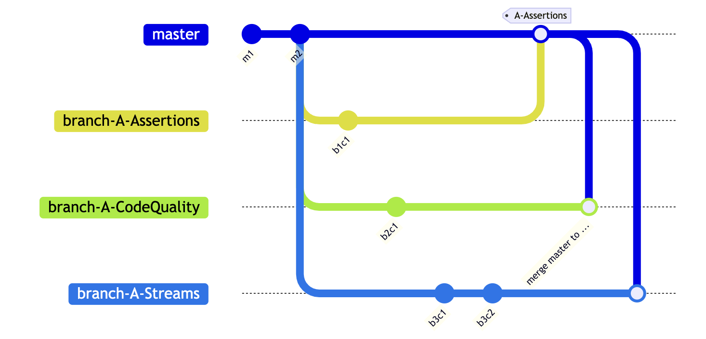
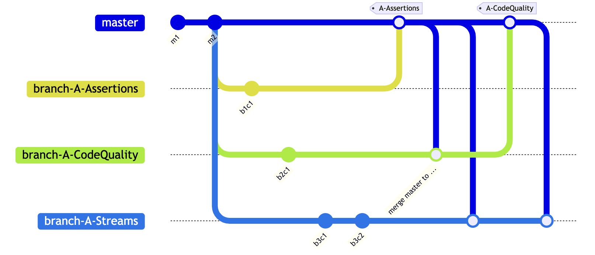

This document is organized into two main sections, namely, Important Notices as well as the tasks for you to do in Week 6 (please refer to Add Increments while Committing Frequently).
Start: 0000, Monday, Week 6
Due by: 2359, Friday, Week 6
Start: 0000, Monday, Week N
Due by: 2359, Friday, Week N
Please follow the instructions carefully. Project work should be spaced out and done over a longer period to help you gain fluency and better simulate real projects. Clumping all iP work into a short burst will not earn full marks. Any deviations can cause our grading scripts to miss your work (and result in you not getting credit for the work).
The individual project (iP) undergoes changes after each semester. As such, teething issues are a possibility. If you encounter any problem while doing the iP, please post in the forum 🔗 so that we can take necessary actions.
Important
⚠️ To qualify for full marks, your last 5 iP commits need to comply with our convention for Git commit message subject, please refer here. If you forgot to do this, add more commits with some small tweaks to the code until you satisfy this requirement (Reason: doing so will help you remember this convention better in the tP, hopefully). Note that writing a commit message body is optional, but if you do write one, follow at least basic conventions for the commit message body.
Important
⚠️ Please also remember to do follow the basic and intermediate rules in the SE-EDU Java coding standard. It is optional to follow the advanced rules.
Relevant SE-EDU guide: Intellij IDEA: Configuring the code style
Note
Note that when something is not covered by the given standards/conventions, you are free to choose which style you want to follow for that, but try to be consistent with the existing code (if any), and ensure everyone in the team follows the same (for tP later on).
Important
(MOST IMPORTANT!) Required increments for Week 5, in order:
Do any leftover iP tasks from the previous week
Generate a new JAR file
Write some full commit messages
Add Increments as PRs: A-Assertions, A-CodeQuality, A-Streams
Add Increment: A-CI
Add an extension
Remember to do any leftover increments from the past weeks before starting on the current week's increments. This guideline applies to future weeks too.
Generate a new JAR file using Gradle (Gradle can bundle the JavaFX third-party library into the jar file. If you do not bundle JavaFX with the JAR file, the application will not work in computers that don't have JavaFX installed). Refer to the Gradle tutorial @SE-EDU/guides to find how.
If the .jar file is smaller than 5MB, most likely JavaFX libraries are not inside it.
There is no need to create a release in GitHub with this jar file (although you are welcome to).
While we do not require you to write full commit messages (i.e., including a message body) in the work done in this course, it is still good to learn how to write such commit message. The purpose of this task is to give you some practice in writing such full and well-written commit messages.
Requirements:
Write full commit messages for at least 2-3 commits that you push this week.
Follow these Git conventions for the commit message body as specified by @SE-EDU/guides when writing them.
Git tag one of those commits as A-FullCommitMessage.
A-Assertions, A-CodeQuality, A-StreamsNote
As you know, one main goal of the iP is to prepare for you for the tP. The task below is heavy on the 'training for tP' aspect.
In previous iP increments, you learned:
How to merge branches locally and push to your fork
How to create PRs from the master branch to an upstream repo
In the following iP task you will learn how to do the following new things, which are relevant to the tP:
How to merge branches remotely, and pull to your local repo
How to create PRs from branches other than master
How to manage PRs that your repo receive
How to work with parallel PRs
Due to the above learning goals, this iP task is a bit complicated. Pay attention and try to achieve all learning goals along the way.
Note how to merge PRs:
Please refer to textbooks pages 207 to 208.
Practice using parallel git branches and PRs, as explained below:
First, do each increment as a parallel branch (follow the branch naming convention you followed earlier branch-Level-8 etc.), but do not merge any.

Then, push each branch to your fork, and create a PR within your fork (i.e., from the increment branch to the master branch). Be careful not to create a PR to the upstream repo. If you did create such a PR by mistake, no worries, just close it yourself. Please refer to textbook pages 202 to 204 for Creating PRs.
Tip
When you are doing the next step, you can run into merge conflicts. In some cases, GitHub will give you a way to resolve those conflicts using the Web interface. While this approach may be good enough for simple merge conflicts, de-conflicting locally in the standard way is safer (e.g., you can run tests to confirm the updated code is correct) and more standard (it's a standard Git feature that you can use even when you are not using GitHub for your project).
Now, merge one of the PRs and update the remaining PRs accordingly, as given below:
3.1)
Merge one of the PRs on GitHub. Remember to choose the Create merge commit option when merging.
3.2)
The above step will cause the master branch of your local repo to fall behind that of your fork (because your remote master branch (i.e., origin/master) now has a merge commit that the local master does not have yet). Therefore, you need to sync the local master with the remote master branch. One way to do that is to switch to the local master branch and then pull the updated master branch from your fork e.g.,
$ git checkout master$ git pull origin masterTag the merge commit as usual, and push to the fork.
The diagram below shows the current situation, assuming you merged the A-Assertions PR first.

3.3) Note how the remaining un-merged branches are no longer in sync with the latest master. To rectify, merge the master branch on to each of them. Resolve merge conflicts, if any. The outcome will be something like the below:

3.4) Push the updated branches to your fork. The PRs will update automatically to reflect the updated branch.
3.5) As before, tag the merge commit in the master branch and push the tag to your fork.
Merge the remaining PRs using a procedure similar to the above. The diagram below shows the situation after merging the A-CodeQuality PR and syncing the local branch-A-Streams with the updated master branch.

A-Assertions: Use Assertions
Use assert feature (not JUnit assertions) to document important assumptions that should hold at various points in the code.
A-CodeQuality: Improve Code Quality
Critically examines the code and refactor to improve the code quality where necessary.
Caution
When adding this increment, follow closely the 'Code Quality' topics you have learned so far, rather than merely follow your own intuition about code quality.
(Optional)
A-Streams: Use Streams
Use the Streams feature of Java in your code, if applicable.
A-CIWe recommend that at least one member of the team attempt the following.
(Optional)
A-CI: Set up CI
Use GitHub Actions to set up Continuous Integration (CI).
The workflow specified by this .yml file is a good candidate for this project. The last three segments are related to I/O redirection tests; can be deleted if not applicable to your project.
Refer to the Using GitHub Actions @SE-EDU/guides to learn how to use that .yml file to set up GitHub actions.
Also note that pushing a GitHub Actions related file to GitHub requires you to authenticate using a Personal Access Token (PAT) that has workflow permissions (because you are modifying a workflow of your repo). If you are using Sourcetree, you can refer to Sourcetree Guide @SE-EDU/guides to learn how to connect Sourcetree with GitHub using a PAT.
Add at least one extension of your choice, selected from category B, C, or D (see below) i.e., pick just one item from one category (i.e., one extension in total, not one from each category) e.g., B-DoWithinPeriodTasks or C-Sort or D-Places
Recommended to add the extension via a branch (branch name is up to you). Optional to add it via a PR.
Add a tag named BCD-Extension to the corresponding commit. Irrespective of the exact extension you did, the tag name should be BCD-Extension.
Caution
Discuss with your team members to ensure that each member picks a different extension.
Tip
You may want to pick an extension that is potentially relevant to your tP so that the code can be reused in the tP later, if possible.
↳ Tentative scheduling
Provide a way for an event to be tentatively scheduled in multiple slots, and later to be confirmed to one the slots.
↳ Snoozing/postponing tasks
Provide a way to easily snooze/postpone/reschedule tasks.
↳ Recurring tasks
Provide support for managing recurring tasks e.g., a weekly project meeting.
↳ 'Do after' tasks
Support the managing of tasks that need to be done after a specific time/task e.g., return book after the exam is over.
↳ 'Do within a period' task
Provide support for managing tasks that need to be done within a certain period e.g., collect certificate between Jan 15 and 25th.
↳ Unscheduled tasks with a fixed duration
Provide support for managing tasks that takes a fixed amount of time but does not have a fixed start/end time e.g., reading the sales report (needs 2 hours).
↳ Reminders for tasks
Provide a way to get reminders about tasks e.g., remind the user about upcoming deadlines.
↳ Find free times
Provide a way for the user to find free times e.g., when is the nearest day in which I have a 4 hour free slot?.
↳ View schedules
Provide a way to view tasks in the form of a schedule e.g., view the schedule for a specific date.
↳ Detect scheduling anomalies
Deal with schedule anomalies e.g., detect if a task being added clashes with another task in the list.
↳ Deal duplicate items
Add the ability to recognize and deal with duplicate items. e.g., the same task added multiple times.
↳ Flexible data source
Provide more flexibility with the data source e.g., the ability for the user to specify which file to use as the data source.
↳ Sorting items managed by the App
The ability to sort items e.g., sort deadlines chronologically.
↳ More natural date formats
Support more natural date formats e.g., Mon in a user command can be interpreted as the date of the next Monday in the calendar.
↳ More flexibility in searching for items
All more flexibility in search e.g., find items even if the keyword matches the item only partially.
↳ Easily edit items
Support a way to easily edit details of items e.g., change the end time of an event without changing anything else.
Minimal: the ability to update an existing item without having to delete it first
Other ideas:
the ability to clone items (to easily create new items based on existing items)
↳ Tagging items
Provide a way to tag items e.g., tag a task as #fun.
↳ Prioritizing items
Provide a way to attach priorities to items e.g., mark an item as a high priority (or priority level 1).
↳ Archiving items
Provide a way to archive items so that the user can remove items from the app but still keep a record of them somewhere e.g., archive all tasks in the list into a file so that the user can start over with a clean slate.
↳ Mass operations
Provide a way to perform tasks on multiple items e.g., delete some specific items in one go.
↳ Statistics and insights
Provide a way to leverage statistics about the items managed by the App e.g., show the number of tasks that have been completed in the past week.
↳ Undo
Provide a way to undo a command.
Minimal: the ability to undo the most recent command.
↳ Give help to users
Provide in-App guidance to users.
Minimal: add a command to access a help page.
Other ideas:
Load the App with some sample data at the first run.
↳ Friendlier syntax for commands
Make the command syntax more flexible.
Minimal: provide shorter aliases for keywords e.g., t can be shorter alias for todo.
Other ideas:
Allow users to define their own aliases
Remove the need for the parts of a command to be in a specific order
↳ Support managing contacts
Support managing info about contacts e.g., details of friends
↳ Support managing notes
Support managing info about small snippets of textual information the user wants to record e.g., one's own waist size, a name of a movie that the user wants to remember
↳ Support managing expenses
Support managing info about expenses e.g., the amounts spent on food, books, transport, etc.
↳ Support managing loan records
Support keeping records of loans given/taken e.g., money lent/owed to colleagues/friends
↳ Support managing info about places
Support recording info about places e.g., info about restaurants visited, for future reference
↳ Support managing trivia
Provide the ability to learn/memorize things e.g., learn vocabulary, answers to questions
↳ Support managing client info
Support managing info about clients e.g., for an insurance agent to keep track of clients
↳ Support managing merchandise info
Support managing info about merchandise e.g., a property agent to keep track of properties, a collector of stamps keep track of items in the collection